|
|
HELP FIND THE FOLLOWING FRENCH LOCATIONS
PAGE 81
THE
PROTECTORS: Disappearing Trick
(Jeremy Summers: Summer 1971)
Le Grand Lac, All. des Genêts, Le Vésinet, Île-de-France, France: House where Brad Huron is
being “contained”.
(Identified by Sietse Postma, August 2023)
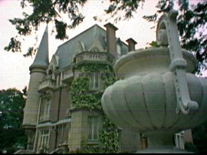
rue des Saules, Montmartre, Paris,
France: Harry (Robert Vaughn) and The Contessa (Nyree Dawn
Porter) continue the discussion on professionalism.
(Identified by Geoff Sockett, June 2015)

(Idenified by Pierre Alfonsi, July 2012)
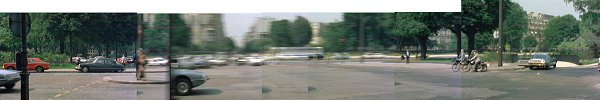
THE
PROTECTORS: Your Witness
(Jeremy Summers: Summer 1971)
l'autoroute du Nord (A1) bewteen
Junction 2 Saint-Denis and Junction 1 Boulevard Péripherique,
Saint-Ouen,
Île-de-France: Harry drives
Christie into town in his Mustang.
(Idenified by Pierre Alfonsi, July 2012)
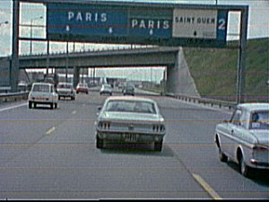
1-9 Gloucester Square, which faces
Srathearn Place: Harry takes
Christie to Paul’s flat.
(Identified by Sam Denham, September 2010)
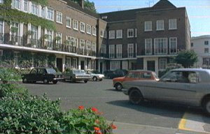
1 Rue du Fauconnier, Paris,
Île-de-France: In order to
avoid being followed, to Paul’s flat Harry arranges for China to use
the Rolls
to block the narrow streets behind him.
(Idenified by Pierre Alfonsi, July 2012)
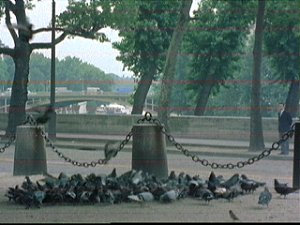
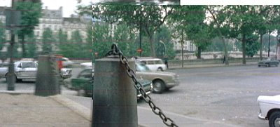
Rue de l'Hôtel de Ville, Paris, Île-de-France - (Idenified by Pierre Alfonsi, July 2012)
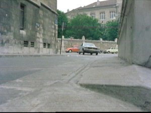
6 Rue de l'Hôtel de Ville, Paris, Île-de-France - (Idenified by Pierre Alfonsi, July 2012)

2 Rue de l'Hôtel de Ville, Paris, Île-de-France - (Idenified by Pierre Alfonsi, July 2012)
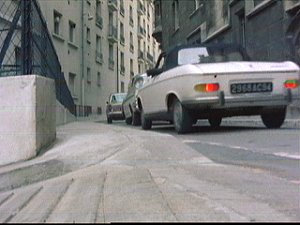
THE PROTECTORS: One and One Make One (Don Chaffey: Summer 1971)
Quai d’Anjou on Ile St.
Louis, Paris: The Contessa (Nyree Dawn Porter)
attempts to rescue (after crossing Pont de Sully) Bennet who
is being
held in a house on the Rue de Leglise. Later, after Harry (Robert
Vaughn) and
The Contessa (Nyree Dawn Porter) and Paul (Tony Anholt) flee the house
in the
Rolls, Yanos (Antony Stamboulie) is left to watch and he follows Kramer
(Christopher Dunham) as he leaves.
(Confirmed by Pierre Alfonsi, July 2012)
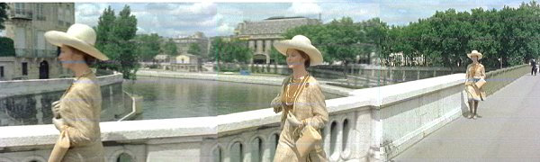
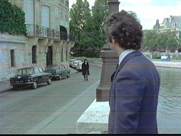
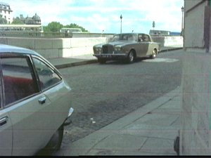
Mairie de Marly-le-Roi, Marly-le-Roi,
Île-de-France: The clinic where Paul is taken – Yanos (Antony
Stamboulie) drives Harry (Robert Vaughn) and The Contessa (Nyree Dawn
Porter)
in an ambulance to see Paul at the clinic. Later Paul and Harry are
able to
carry out Bennet on a stretcher and escape in the ambulance.
(Identified by Geoff Sockett, April 2015)
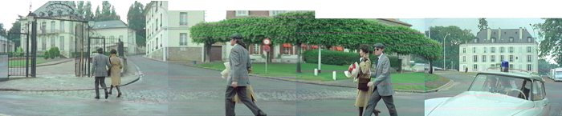
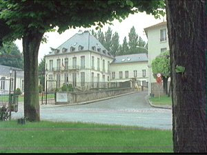
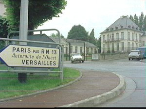
Think you know a spot? Need a bigger image? Email me.
< Previous | Index | Avengerland | Next >
Copyright © 2003 Anthony R. McKay